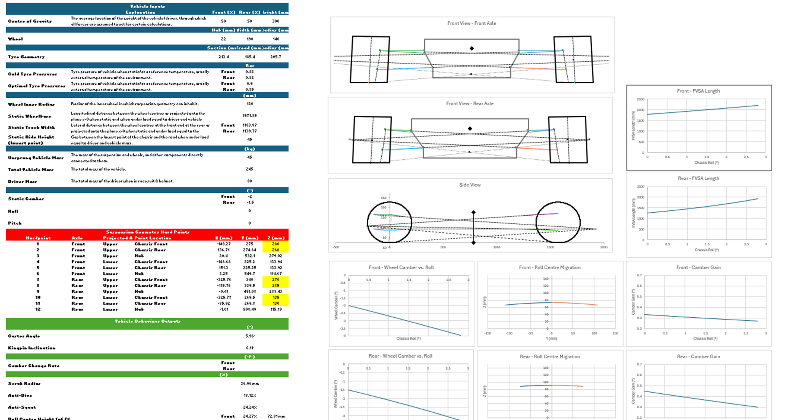
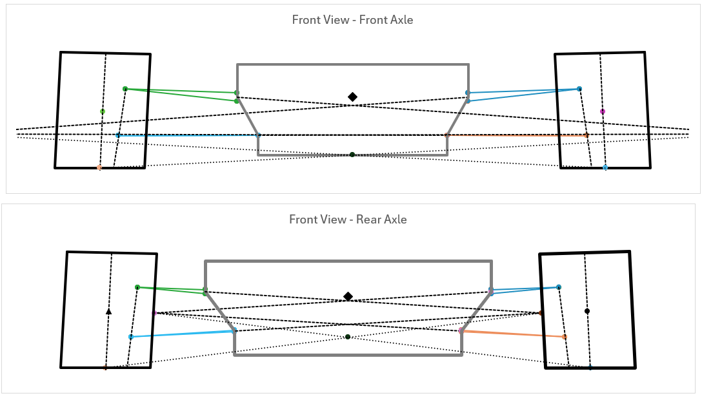
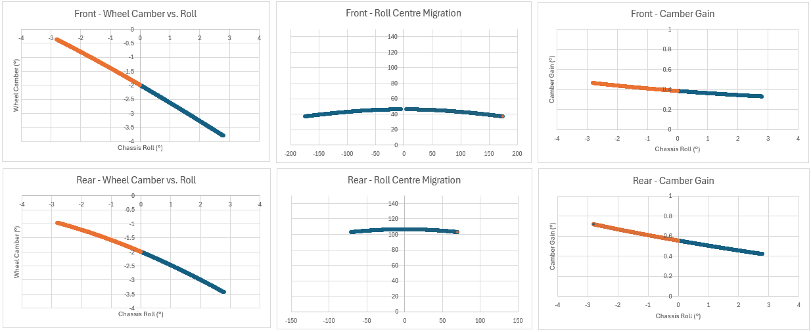
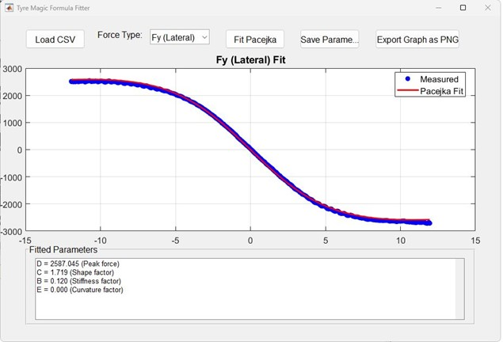

Why I Built It - Learning by Building
I learn best by doing. Reading Milliken & Milliken's Race Car Vehicle Dynamics cover to cover is one thing; building a tool that produces meaningful numbers from first principles is something else entirely. When I took on the Vehicle Dynamics role at Team HARE CV for Formula Student, I faced a choice: jump straight into CAD and worry about the maths later, or develop a rigorous analytical model first that would make every geometric decision traceable and defensible.
I chose the latter - and Excel was the deliberate choice. Not because dedicated tools like OptimumKinematics or MSC Adams don't exist, but because building it myself forced me to understand every relationship at the equation level before trusting any output. If the formula is wrong, the number is wrong. There is no abstraction layer to hide behind. It also keeps the whole team in the loop - anyone can open it, interrogate a number, and follow the cell references back to the source without installing anything.
Workbook Architecture - 15 Sheets, One Source of Truth
The workbook is structured around a single master input layer that propagates downstream. The guiding principle: no number should be typed in twice. Every sheet references the Dashboard; if a hardpoint changes, every output - roll centre, camber curve, spring rate, ARB diameter - updates instantly.

Coordinate System & Hardpoint Matrix
Before writing a single formula, I established a consistent coordinate convention:
- X: longitudinal axis - positive forward from wheel centre
- Y: lateral axis - positive outboard (away from vehicle centreline)
- Z: vertical axis - positive upward, with \(Z = 0\) at the road surface
Each of the 12 hardpoints is defined in this space - six per axle, covering the upper arm chassis front and rear attachment, upper hub, lower arm chassis front and rear, and lower hub. Approximate values for the front axle sit in the region of: upper chassis points at around \(Y \approx 275\,\text{mm}\) outboard and \(Z \approx 250\,\text{mm}\), with lower chassis points at \(Y \approx 225\,\text{mm}\) and \(Z \approx 115\,\text{mm}\).
The rear geometry follows the same six-point structure. One notable packaging compromise at the rear: the lower wishbone chassis attachment points sit higher than would be ideal from a pure geometry standpoint - closer to \(Z \approx 128\,\text{mm}\) rather than the lower values that would produce more favourable arm angles and a lower rear roll centre. This was a direct consequence of packaging constraints around the rear drivetrain and differential mounting. The pick-up points simply could not move downward without conflicting with structural and powertrain elements. This is one of many real-world compromises that distinguish a physical design from an analytically optimal one, and it is why the rear roll centre sits somewhat higher relative to the front than might otherwise be chosen.
Instant Centres and Roll Centre Height
The fundamental building block of front-view geometry is the Front View Swing Arm (FVSA) - the virtual arm connecting the wheel hub to the instant centre formed by the extended lines of the upper and lower wishbone arms, projected onto the YZ plane. This is the foundation for understanding camber behaviour and the geometric contribution to lateral force generation.
Line Gradient Computation
For each wishbone, the gradient of the arm line in the front view is computed from the chassis average and hub attachment points. For the upper arm:
The same calculation is performed for the lower arm. This is repeated for all four arms at both axles.
Instant Centre Location
The instant centre for each side is the intersection of the two arm line extensions. Using point-gradient form, this reduces to a closed-form simultaneous equation - no iteration required:
The front FVSA length - from the wheel contact patch to the instant centre - is approximately 1,500 mm. The rear is shorter at around 1,050 mm, producing a higher camber gain rate at the rear axle through roll - intentional, and discussed further in the roll sweep section.
The Kinematic Roll Centre - and Why It's Less Useful Than It Looks
The kinematic roll centre is found by constructing a line from each tyre contact patch to its respective instant centre, and noting where the two lines cross at the vehicle centreline:
The current geometry produces an approximate front roll centre of ~45 mm and a rear of ~105 mm. It is worth being direct, however, about the limitations of these numbers and how much weight they should carry in design decisions.
The kinematic construction assumes rigid bodies, massless links, and no tyre compliance - none of which hold under dynamic loading. What actually governs the geometric component of lateral load transfer are the Force Application Points (FAPs) - the points through which suspension links physically apply lateral force to the sprung mass - which do not in general coincide with the kinematic roll centre. Under large lateral accelerations with compliant tyres, the force-based roll centre migrates substantially from its kinematic prediction.
The value of tracking kinematic roll centre in this tool is therefore primarily comparative: understanding how geometry changes shift it relative to a baseline is useful for directional tuning. Treating its absolute position as a direct prediction of vehicle behaviour is not justified.

Camber Change Rate, KPI, and Scrub Radius
Camber Change Rate
Camber is the angle the wheel makes with the vertical when viewed from the front. Negative camber - the top of the wheel tilted inward - increases the contact patch loading on the outer edge of the tyre and is beneficial for lateral grip in cornering. The optimal camber angle for maximum lateral force is typically a small negative value, and maintaining that angle dynamically through bump and roll is the goal of camber change rate tuning.
The camber change rate (CCR) defines how many degrees of camber the wheel gains per millimetre of wheel travel. It is directly derived from the FVSA length - a longer virtual swing arm produces a gentler camber change, a shorter arm produces aggressive camber gain. Too little camber gain and the tyre rolls onto its outer shoulder in cornering, reducing the effective contact patch. Too much and the camber becomes excessive at the limits of travel, increasing tyre wear and reducing straight-line stability:
The rear axle deliberately has a higher CCR than the front. As the body rolls in a corner, the rear outer wheel needs to recover more camber relative to the road than the front - this partially compensates for the higher rear roll centre. If the rear camber gain were too gentle, the rear outer tyre would roll onto its shoulder under load, reducing rear grip and producing a tendency toward oversteer. The shorter rear FVSA is therefore a considered trade-off: more aggressive camber gain in exchange for the packaging constraint of a higher roll centre.
Kingpin Inclination (KPI) and Scrub Radius
The kingpin inclination (KPI) is the angle the steering axis makes with the vertical when viewed from the front of the car. It exists primarily for packaging reasons - tilting the steering axis inward at the top allows the upper hub point to sit further inboard, away from the wheel rim, without the lower point cutting into the brake disc or hub. KPI also contributes to a camber-restoring effect as the wheel is steered: as the wheel turns, KPI geometry causes the outer wheel to rise slightly, producing a small positive camber change that counteracts the negative camber induced by the steering angle. This self-centring behaviour adds to the returning feel of the steering.
The scrub radius is the horizontal distance, measured at the road surface, between where the steering axis intersects the ground and the centre of the tyre contact patch. A positive scrub radius means the contact patch is outboard of the steering axis ground point. Under braking, a positive scrub radius creates a moment that tries to toe-in each front wheel, which is broadly stabilising. A negative scrub radius does the opposite - it is used deliberately in some FWD road cars to produce an outward toe moment under asymmetric braking, preventing the car from pulling toward the side with more grip. For a Formula Student car without power steering, a modest positive scrub radius is preferred for feel and directional stability, but it must be kept small enough to avoid heavy steering loads and shimmy sensitivity.
The steering axis in the front view is defined by the upper and lower hub attachment points. KPI is the angle this axis makes with the vertical; the scrub radius is the lateral distance between where this axis meets the road and the tyre contact patch centre:
The front design produces a KPI of approximately 5.8° and a scrub radius in the region of 30–35 mm. Staniforth notes that a positive scrub radius introduces a self-centring moment under braking, while excessive values introduce shimmy sensitivity - the figure here sits comfortably within the accepted range for a Formula Student car without power steering.
Anti-Dive and Anti-Squat Percentages
Side-view geometry governs how the suspension reacts to longitudinal load transfer under braking (anti-dive) and acceleration (anti-squat). A 100% anti-dive geometry theoretically eliminates front suspension compression under braking - the geometry carries the pitching moment through the links rather than the springs. In practice, high anti-dive percentages cause harshness and deteriorate steering feel by coupling braking forces directly into the geometry, so the design point sits well below 100%.
The current geometry gives approximately 28–30% anti-dive at the front and a similar figure for anti-squat at the rear. Caster angle comes out at approximately 5.8°, providing the trail and returnability expected for this application.
Dynamic Roll Sweep
The static geometry tells you what the suspension looks like at rest. The dynamic sweep tells you how it behaves. The Front Roll and Rear Roll sheets sweep body roll from 0° to approximately 5–6° in small increments, tracking every key geometric parameter continuously.
At each roll step, body rotation is applied to all chassis-mounted hardpoints using a 2D rotation matrix about the longitudinal axis:
At each step the tool recomputes: updated arm line gradients, new instant centre location, roll centre height and lateral position, camber change rate, real wheel camber (body roll plus camber gain), FVSA length, and track width variation.

Wishbone Length Validation Against CAD
The Wishbones sheet provides a critical geometric consistency check: it computes the 3D Euclidean length of each wishbone arm from the hardpoint coordinates and compares these against CAD measurements.
| Wishbone | Calculated (mm) | CAD (mm) | Error |
|---|---|---|---|
| Front Upper - Forward arm | ~316 | ~316 | <0.03% |
| Front Upper - Rearward arm | ~292 | ~292 | <0.02% |
| Front Lower - Forward arm | ~366 | ~366 | <0.02% |
| Front Lower - Rearward arm | ~363 | ~363 | <0.03% |
| Rear Upper - Forward arm | ~364 | ~364 | <0.02% |
| Rear Lower - Forward arm | ~409 | ~409 | <0.01% |
All wishbone lengths agree with CAD to within less than 0.05%. If the 3D lengths match, the hardpoints are geometrically self-consistent - every downstream calculation is built on a correct foundation.
Tyre Modelling, Load Sensitivity, and Why It Changes Everything
The tyre is not a rigid body. Under load it deflects, deforming the contact patch and altering the effective ride rate at the wheel. I used manufacturer-supplied static spring rate data across a matrix of tyre pressures and vertical loads, and fitted a regression model to this data.
Regression Model
With nine data points spanning three pressure levels and three load levels, a multiple linear regression was performed in Excel's Analysis ToolPak, modelling spring rate as a function of tyre pressure and vertical load:
Approximate fitted coefficients: \(\beta_0 \approx 50{,}000\,\text{N/m}\), \(\beta_1 \approx 68{,}000\,\text{N/m/bar}\), \(\beta_2 \approx 190\,\text{N/m/kg}\)
\(R^2 \approx 0.97\) - explaining approximately 97% of variance across the tested operating range.
The manufacturer data implied a broadly linear relationship between wheel load and static spring rate - and with only nine data points, the regression confirms this holds reasonably well across the measured range. However, this linearity should not be taken as a general truth. It is a characteristic of the static spring rate measurement specifically, and it does not extend to the tyre's lateral force behaviour - which is where the picture becomes more complex and far more consequential for vehicle set-up.
Static Contact Patch Deflection
Tyre Load Sensitivity - Why Lateral Force Is Not Linear
Any discussion of lateral load transfer is incomplete without understanding tyre load sensitivity. It is arguably the most important single concept in vehicle dynamics set-up, and one of the most commonly glossed over.
Unlike the approximately linear static spring rate, a tyre's lateral force generation is markedly degressive with vertical load. The simplest way to think about it is in terms of the tyre's coefficient of friction, or \(\mu\). As more vertical force is applied to the tyre, the efficiency of the tyre decreases - the effective \(\mu\) falls. The tyre produces more absolute lateral force, but proportionally less force per unit of vertical load. At low loads the relationship is roughly linear; as load increases, the tyre saturates and the rate of lateral force gain diminishes. This non-linearity is described thoroughly by Pacejka and is observable in any FSAE tyre dataset. Where the spring rate data suggested linearity was a safe approximation, the lateral force data makes clear it is not.
The consequence for vehicle set-up is direct and important: lateral load transfer reduces total axle grip. Consider two wheels on the same axle, each carrying \(F_0\) of vertical load at rest. In a corner, load transfers by \(\Delta F\) - the outer wheel sees \(F_0 + \Delta F\) and the inner sees \(F_0 - \Delta F\). The outer wheel gains some lateral force capacity, but due to the falling \(\mu\), it gains less than the inner wheel loses. The axle's total lateral force potential decreases.
This effect is not uniform across the car. Because the front and rear axles carry different static loads (set by the weight distribution) and experience different amounts of lateral load transfer (set by their respective roll stiffness share and roll centre heights), the reduction in effective \(\mu\) happens at different rates front to rear. An axle that is already heavily loaded statically will reach the degressive region of the tyre curve sooner under lateral load transfer. This means the relative efficiency of the front and rear axles shifts during cornering, directly affecting the balance of the car - and it is one reason why weight distribution, roll stiffness split, and roll centre heights all interact to set the final understeer or oversteer character of the vehicle.
This bears directly on the roll stiffness distribution computed in the Springs and ARB sheets. The 45/55 front/rear split in this design induces mild understeer as a stable baseline for a new driver and an unproven vehicle. A driver comfortable with the car can soften the front ARB, reducing front load transfer and recovering front grip balance.
At approximately 1.3 G lateral, the front outer wheel is carrying roughly 2.4× its static load, and the inner is contributing relatively little lateral force. The linear spring rate model is still a valid input to the ride frequency and wheel rate calculations - but it is the non-linear lateral force behaviour that ultimately sets the grip limits at each axle, and that is where the load sensitivity picture matters most.
The full interaction between load sensitivity, cornering stiffness, mechanical balance, and the understeer gradient is a topic that deserves its own treatment - I intend to write a dedicated article covering these in detail in the future.

Lateral Load Transfer - Decomposed
With tyre load sensitivity in mind, the Weight Transfer sheet becomes more than a force accounting exercise. The goal is not just to know how much load transfers - it is to understand through which paths it goes, and what that means for grip balance.
The Three Paths of Lateral Load Transfer
- Unsprung mass load transfer - the wheels, hubs, and brake hardware are unsprung. Their contribution is \(\Delta F_\text{unsprung} = m_\text{us} \cdot a_y \cdot h_\text{us} / t\). Small, but fixed - it cannot be tuned.
- Geometric (jacking) load transfer - lateral tyre force is reacted through the suspension geometry directly into the sprung mass. The proportion going through this path is set by the roll centre height. This path involves no spring compression, produces no roll angle, and is not tunable without changing geometry.
- Elastic load transfer - the remainder of the lateral force is reacted through the springs and anti-roll bars, causing the body to roll until spring moments balance the applied load. This is the tunable portion.
Roll Gradient
Per-Wheel Loads
At the skidpad scenario (approximately 1.3 G lateral), the front outer wheel carries roughly ~2,400 N against the inner's ~950 N. At the maximum lateral acceleration target of around 1.6 G this diverges further - bringing tyre load sensitivity directly into play, as discussed in the previous section.
Springs, Motion Ratio, and Ride Frequency
The Springs sheet connects geometric analysis to physical hardware. The chain is: target ride frequency → required wheel rate → account for motion ratio through the rocker → required spring rate → select from the available catalogue.
Wheel travel is also verified: front jounce approximately 70 mm, droop approximately 25 mm, checked against load transfer scenarios to confirm the spring does not bottom out under maximum braking or cornering.
Anti-Roll Bar - Torsional Stiffness and Bar Sizing
With spring rates selected and their roll stiffness contribution known, the shortfall must come from the anti-roll bars. The ARB sheet accepts the required torsional stiffness, the ARB motion ratio through the rocker, material properties, and bar geometry - outputting the required diameter.
The resulting bar diameters are approximately 12 mm at the front and 8 mm at the rear - small, as expected for a lightweight Formula Student car. The hollow bar option allows mass to be saved at the cost of higher manufacturing complexity.
Comparing Against the Previous Year's Baseline
The Setups sheet stores named configurations and computes the delta between them. The most significant changes from the previous year to the new design are in the lower wishbone mounting heights - lowering the lower chassis attachment points adjusts arm inclination angles, which cascades into anti-dive geometry and roll centre heights. Every change is fully traceable through the workbook.
| Parameter | Previous Year (approx.) | New Design (approx.) | Direction |
|---|---|---|---|
| Front track width | ~1,185 mm | ~1,190 mm | +5 mm wider |
| Rear track width | ~1,140 mm | ~1,140 mm | Unchanged |
| Front lower chassis Z | ~134 mm | ~115 mm | −19 mm lower |
| Rear upper hub outboard Y | ~491 mm | ~501 mm | +10 mm outboard |
| Approx. front roll centre | ~50 mm | ~45 mm | Slightly lower |
What I Learned - and What Comes Next
Building this calculator from first principles forces a depth of understanding that reading alone does not produce. When the roll centre came out in an unexpected location, tracing back through the instant centre computation was the only option - there was no black box to blame. That process is its own form of education.
The tyre section was perhaps the most illuminating to build. It started as a straightforward regression exercise - the manufacturer data suggested a roughly linear relationship between load and spring rate, and that held up well enough for ride frequency calculations. But the moment you look at lateral force behaviour and see how rapidly the degressive curve diverges from that linear approximation, the priority of keeping the car flat becomes viscerally clear. The spring rate linearity is a safe modelling assumption in one context; in the context of grip, it is exactly the wrong assumption.
Engaging with Mitchell's critique of the kinematic roll centre was also clarifying. It is tempting to treat a roll centre number as a target to hit - but understanding that the Force Application Points are what actually govern load transfer changes how you think about the geometry. The kinematic roll centre becomes a comparative tool rather than an absolute design constraint.
Several areas remain in development. The Jounce and Droop sheets currently carry placeholder markers - the full wheel travel kinematics analysis is the next major addition. The tyre regression will be refined once on-car pressure and load data comes back from 4-post rig testing. And the whole workbook will be cross-validated against MSC Adams Car once the physical system is built, with Adams capturing the higher-order effects that a 2D/3D hybrid model inevitably misses.